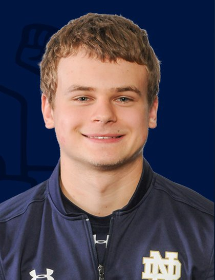
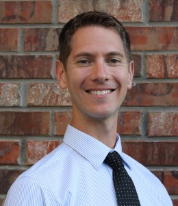

PI
Jonathan K. Whitmer
Assistant Professor
Ph. D. University of Illinois, Physics, 2011
M. S. University of Illinois, Physics, 2009
B. S. Kansas State University, Mathematics and Physics, 2005
Research Interests: Everything
Curriculum Vitae
Assistant Professor
Ph. D. University of Illinois, Physics, 2011
M. S. University of Illinois, Physics, 2009
B. S. Kansas State University, Mathematics and Physics, 2005
Research Interests: Everything
Curriculum Vitae
Postdocs and Graduate Students
 Ernesto Cortes Morales
Ernesto Cortes Morales Postdoctoral Scholar
B. S. University of Delaware, 2013
Research Interests: Polymer Composites, Dynamics and Response in Soft Materials, Thermodynamics and Statistical Mechanics
 Michael Quevillon
Michael Quevillon Graduate Student
B. S. University of Minnesota, 2015
Research Interests: Colloidal Assembly, Ionic Liquid Crystals, Free Energy Mapping, Dimensionality Reduction Methods
Vikramjit S. Rathee Graduate Student
B. S. University of Delaware, 2013
Research Interests: Conformations of Weak Polyelectrolytes, Ion Separation Membranes, Hybrid Monte Carlo Methods
Anne C. Leonhard
Graduate Student
B. S. Rose-Hulman Institute of Technology, 2017
Research Interests: Free Energy Computations, Drug Delivery
2017 Notebaert Graduate Fellowship
Graduate Student
B. S. Rose-Hulman Institute of Technology, 2017
Research Interests: Free Energy Computations, Drug Delivery
2017 Notebaert Graduate Fellowship
Jiale Shi
Graduate Student
B. S. Peking University, 2017
Research Interests: Liquid Crystals, Phase Transitions, Advanced Sampling Calculations
Graduate Student
B. S. Peking University, 2017
Research Interests: Liquid Crystals, Phase Transitions, Advanced Sampling Calculations
 Pedro Amorim
Pedro AmorimGraduate Student
B. S. Univ. Federal do Rio Grande do Norte, 2014
M. S. University of Tulsa, 2017
Research Interests: Polymer Materials, Water Desalination Technologies
Shanghui Huang
Graduate Student (Chemistry)
Research Interests: Advanced Sampling and Colloidal Assembly
Graduate Student (Chemistry)
Research Interests: Advanced Sampling and Colloidal Assembly
Undergraduate Students
Frank Van Ess
Class of 2020
Research Project: Clusters of Anisotropic Colloids
Class of 2020
Research Project: Clusters of Anisotropic Colloids

Arsenii Panteleev
Class of 2020
Research Project: Ionic Liquid Crystals, Ion Solvation
2018 NDEnergy Slatt Fellowship
Class of 2020
Research Project: Ionic Liquid Crystals, Ion Solvation
2018 NDEnergy Slatt Fellowship
Group Alumni
 Dr. Hythem Sidky
Dr. Hythem Sidky Graduate Student, 2014-2018
B. S. University of Maryland, Baltimore County, 2011
Research Interests: Liquid Crystals, General Thermodyanmics, Free Energy Methods, Machine Learning, and more...
2016 NSF Graduate Fellow
2017 CBE Best Candidacy Award
Personal Website
Current: Ferguson Lab, U. Chicago IME

Dr. Benjamin J. Sikora
Postdoc, 2015-2016
Research Interests: Free Energy Methods, Polymer Physics, Metal-Organic Frameworks, Zeolites, Adsorption
Current: Honeywell
Postdoc, 2015-2016
Research Interests: Free Energy Methods, Polymer Physics, Metal-Organic Frameworks, Zeolites, Adsorption
Current: Honeywell
Dr. Dhagash Mehta
Research Assistant Professor, 2015-2016
Research Interests: Polynomial Homotopy Methods, Minimum Energy Configurations, Equations of State
Current: United Technologies
Research Assistant Professor, 2015-2016
Research Interests: Polynomial Homotopy Methods, Minimum Energy Configurations, Equations of State
Current: United Technologies
 Aristotle J. Zervoudakis
Aristotle J. Zervoudakis Undergraduate Student, 2016-2018 (Class of 2018)
Research Project: Coarse-Grained Models of Complex Coacervates and Weak Polyelectrolytes
2016 NDNano Undergraduate Research Fellowship (NURF)
2017 NDEnergy Slatt Fellowship
Current: Graduate Student, University of Minnesota
 Soren Kyhl
Soren Kyhl Undergraduate Student, Summer 2017 (Class of 2018)
Research Project: Free Energy Mapping of Cluster Assemblies
Current: Graduate Student, University of Chicago
 Joseph Sabat
Joseph Sabat Undergraduate Student, 2017-2018 (Class of 2018)
Research Project: Binding Free Energy Calculations
Catherine Drummond
Undergraduate Student (Class of 2018), 2016
Research Project: Host-Guest Drug Delivery Complexes
Undergraduate Student (Class of 2018), 2016
Research Project: Host-Guest Drug Delivery Complexes
Nishi Kashyap
NDNano Undergraduate Research Fellow (IIT Delhi), 2017
Research Project: Elastic Properties of Fluctuating Biological Membranes
NDNano Undergraduate Research Fellow (IIT Delhi), 2017
Research Project: Elastic Properties of Fluctuating Biological Membranes
Alisha Agrawal
NDNano Undergraduate Research Fellow (IIT Delhi), 2017
Research Project: Phase Behavior of Ionic Liquid Crystals (co-advised with Jennifer L. Schaefer)
NDNano Undergraduate Research Fellow (IIT Delhi), 2017
Research Project: Phase Behavior of Ionic Liquid Crystals (co-advised with Jennifer L. Schaefer)
Jiahong Shen
iSURE Summer Student (Fudan University)
Research Project: Elastic Properties of Fluctuating Membranes
Current: Ph. D. Student at Northwestern University
iSURE Summer Student (Fudan University)
Research Project: Elastic Properties of Fluctuating Membranes
Current: Ph. D. Student at Northwestern University